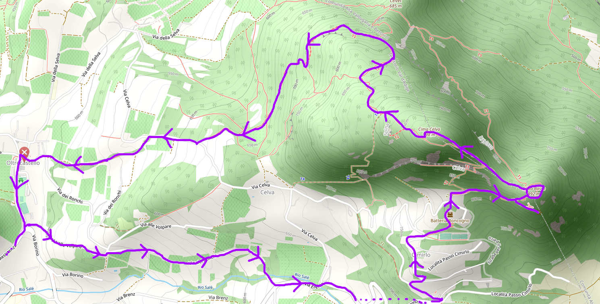
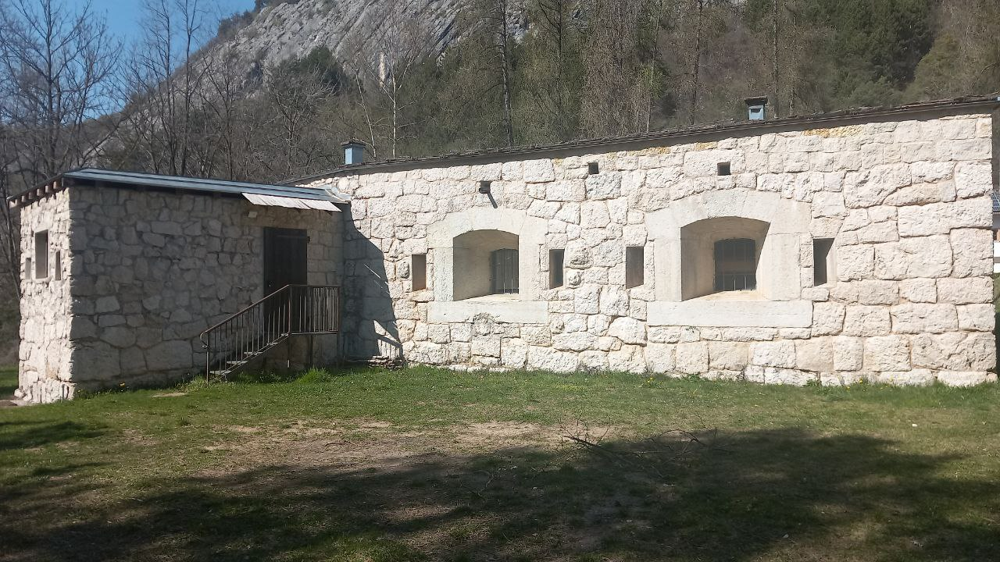
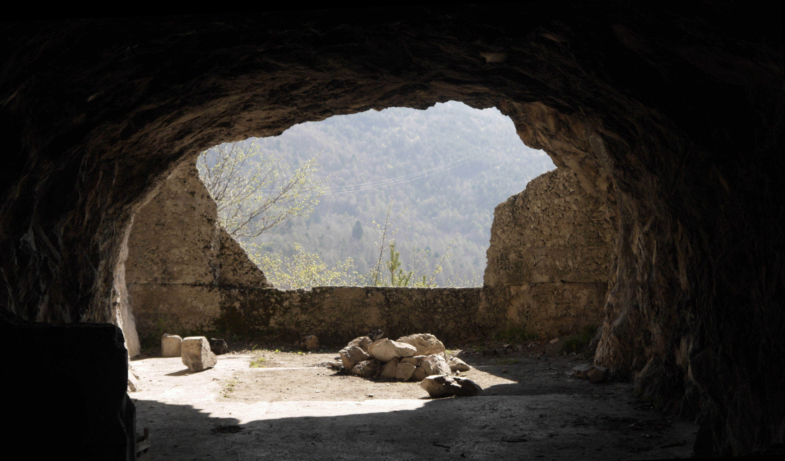
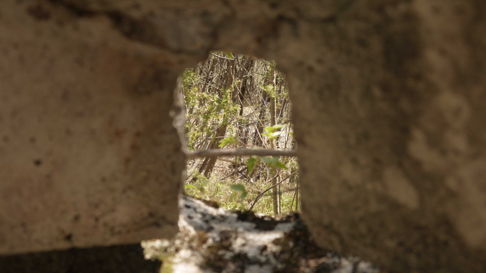
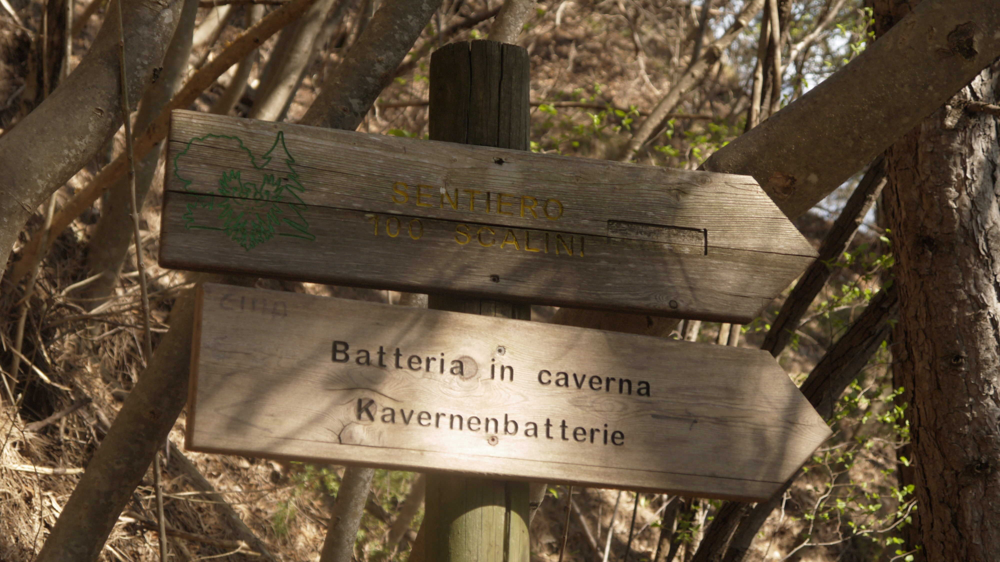
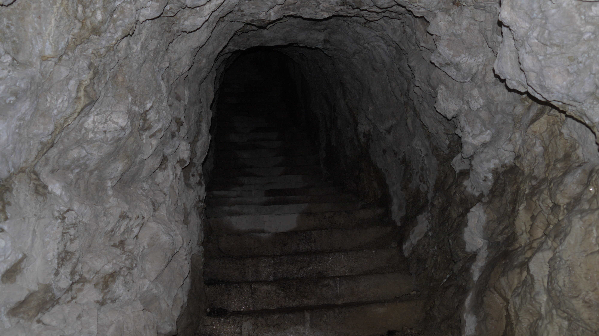
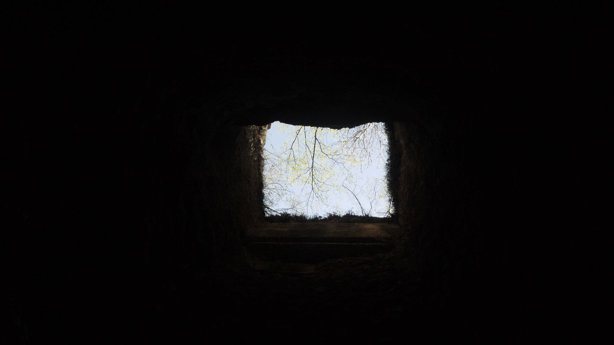
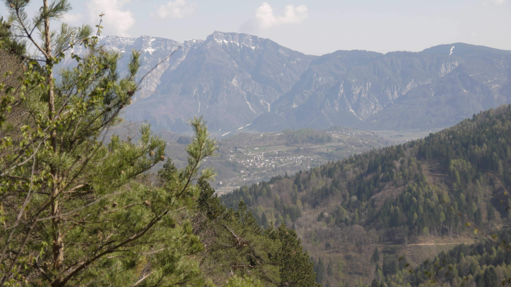
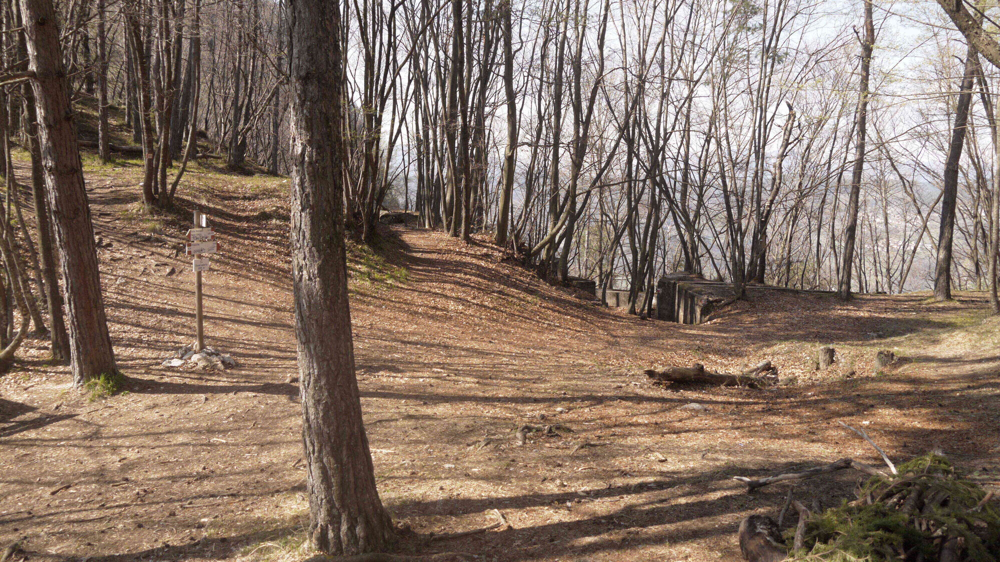

Giovanni's Diary > Subjects > Reading > Surroundings > Chapters >
Mount Celva
Today I decided to take a walk to Mount Celva. It is easily reachable from the city by foot in about two and an half hours and It is only 998 meters high. Despite not being in the same status as the bigger mountains, It has been a startegic place during world war I because of Its position halfway across the Val Sugana and the Val d'Adige. From Its top, one can see the entire Val Sugana and possibly any enemy's army marching north. For this reason, the Austrians heavily invested into fortifying the mountain with kilometers of barbed wires and fortresses protected inside the mountain. All this effort can still be witnessed to this day, making for an enjoyable walk through the testimony of the great war.
Starting from Trento, we head to Mesiano and then to Povo, Oltrecastello and finally Cimirlo. From this locality, one can choose various paths, we are going to take the SAT's 411. You should know that there are two parts of the mountain, the former being the actual top and the latter being a lower area usually referred to as "Basso Celva". We will see both.

Figure 1: Section of the path from Oltrecastello
Taking the 411, we start going up. The difficulty is easily accessible to everyone, except maybe the last 20 minutes where the path is steeper and rocky, with iron ropes to help the less capable ones. We meet a park and from there we reach a well maintained Austrian fortress, which can be seen in the picture below. There was a scout group when I passed, the more experienced people were explaining some stuff about the backpack to the young kids. They were talking a lot, I could feel the kids being bored, It bored me for the 1 minute I was there.

Figure 2: Austrian Fortress
We proceed through the path and we see the first entrance inside the mountain. It is a scary one, you don't know what is inside but you are curious. Some voices inside me were saying "Forget about It, keep following the path, It is dangerous" while another voice was saying "I really want to see the inside and how far the hole goes". This time, curiosity won so I entered. The ceiling was low, the temperature dropped quickly and the air was humid. Some holes on the left or right were completely dark so I grabbed a torch, other places were openings to see the path beneath.

Figure 3: View from the cavern
Peeking from holes, you could see the entire path I was going to take, and I felt totally invisible. This reminded me that this place was designed for war and for death, there was no way you could go through the path without being noticed or shot at.

Figure 4: Peeking from a hole
I went back to the entrance and kept going through the path I was supposed to follow. After some time, the street splits: one part going up and the other going down with the sign "Sentiero dei 100 Scalinig" which translated means "Path of 100 Step". This one goes to another fortress inside the mountain, this time deeper and scarier.

Figure 5: Sign at the intersection
The name is not misleading, there is a tunnel of 100 steps going upwards in total darkness, which is really scary especially when being alone. I started going up with my phone's flashlight, performing each step as carefully as possible. The ceiling was really low, and It felt like the steps were endless. Behind me I could hear two people taking the same path as me, but decided not to go up the stairs. I really hope I did not scared them by making noises, I surely would have been incredibly scared in the total darkness, what an horror movie that would have been.

Figure 6: The start of the 100 steps
But there was light at the end of the tunnel, with a big hole opening from at least 10 meters above. This could have been used to transport materials, weapons or people from one base to the other, but Its just me wondering now.

Figure 7: The big hole at the end of the 100 steps
Going back downstairs, the view opens up for the first time, revealing a good view of the Valsugana.

Figure 8: View of the Valsugana
Back to the original path, the 411, we reach the Bassa Celva where a big area welcomes the hikers (or the solders). From here the entire valley is visible with great clarity, with fortifications all around it. The path keeps going upwards towards the top, crossing the remains of the fortress.

Figure 9: Bassa Celva
After resting some time and taking a bite of chocolate, I headed downward taking the west route. Just beneath the top there is another entrance to some dark corridors, I tried getting in but the corridors where really long and disorienting. I got scared and retreated. The rest of the walk back was smooth, arriving at Oltrecastello in about one hour.
I sat on a bench in Povo Sale' to write this text. There is a public shelf for books where everybody can take or leave a book, I always stop by to check what books have changed. This time, I see a bunch of kids ripping off pages from the books and throwing them to the trees, that made me really sad. While I was in the bus I could barely breathe as at least 30 people where talking loudly at their phone, each one of them trying to be louder than the others so that they could be heard well.
Travel: Surroundings, Index